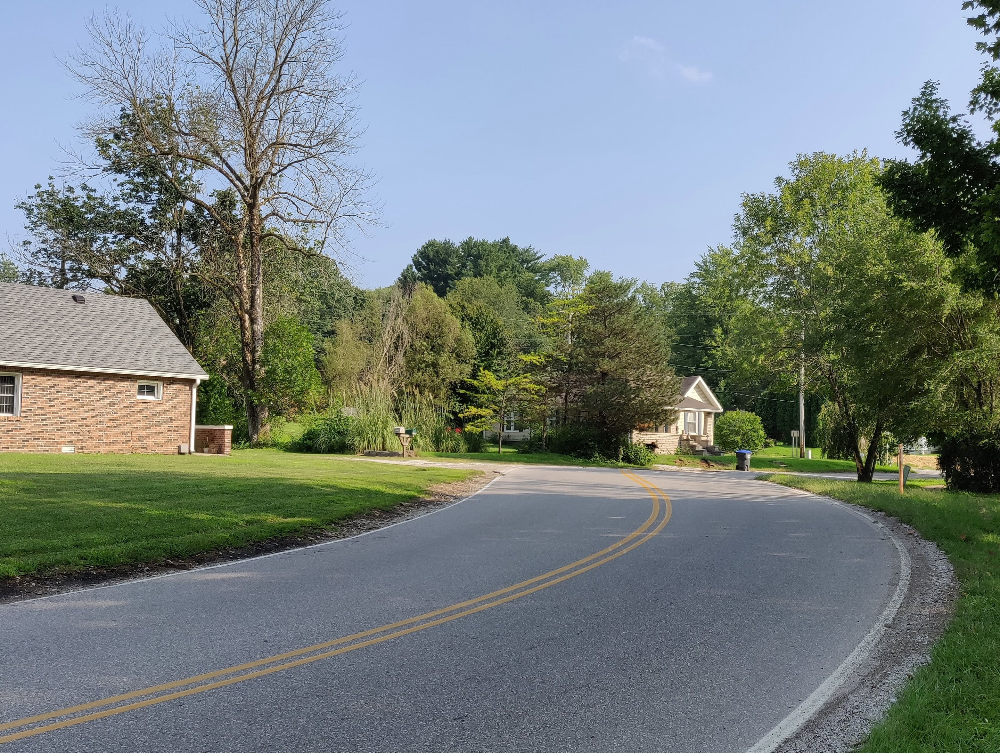
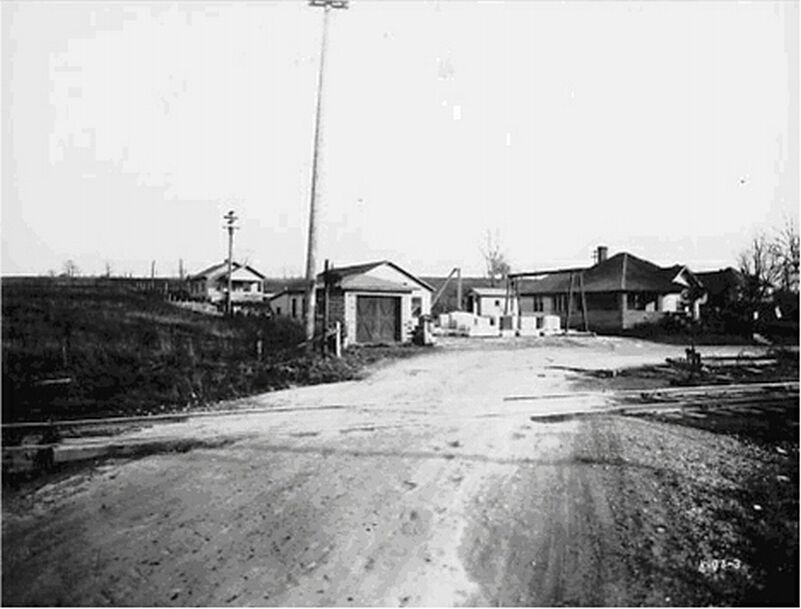
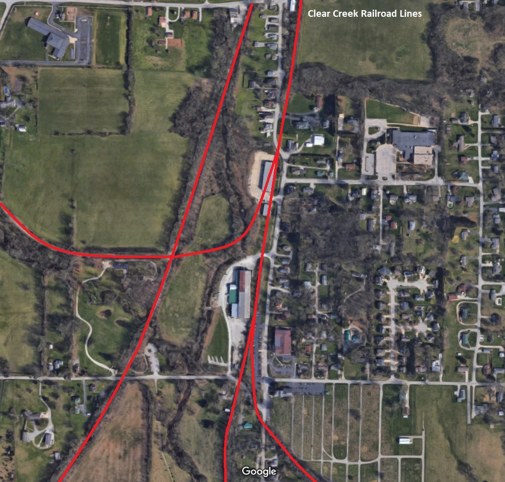
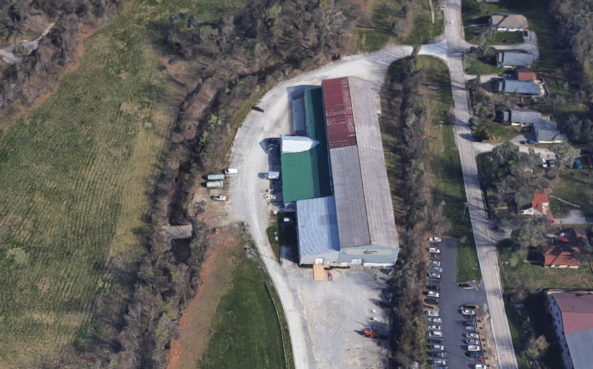

Clear Creek Indiana
Home
Timeline


Timelines
Overall Town History
Clear Creek Christian Church
U.S. Post Office, Switch, & Mills
Clear Creek School
Wampler House
Stella's
Town Timeline:
In the 1850s the New Albany and Salem Railroad, later called the Monon ran north and south
over the western part of the township. This created opportunity for the development of several stone quarries and stone mills.
Clear Creek offered water for the settlers. The town named after this creek. Clear creek now crosses downtown
Bloomington via underground pipes and flows through Perry Township. Outside city limits,
it flows through clear creek town. 2/3 of Bloomington's water drains through Clear Creek.
Indiana University's Jordan River drains into the creek.
1853 First train of the Monon reaches Clear creek
Town of Clear Creek developed in the 1890s as workers in stone mills moved into the area.
Illinois Central Railroad also laid tracks through town. Passenger trains connecting Louisville
and Chicago stopped at Clear Creek Depot twice daily, and freight trains loaded with stone and
other goods rumbled through at all hours.
Roads consisted of dusty wagon trails. The community had horses and buggies. No electric lights, not even gas lights.
Richer people had kerosene lanterns. Occupations were mostly farming, lumbering and masonry.
Women wove cloth that they made into garments and spun the thread on a wheel.
1886 Limited scale sugar making, old hands at the business say they always have a big march run.
The output was 100 gallons of sweetness and two barrels of good beer. Sugar water beer.
A Cheap Beef wagon was around, making regular calls to your door. 5 cents per pound for second cuts,
6 cents per pound for excellent roasts, and 7 cents per pound for Porter-house steak.
Other places at the time had beef for 15cents per pound. Mr Miller's meat wagon comes once a week
Fishing ponds were popular social gatherings. Bloomington people would sometimes travel down to fish.
Amos Wright who ran a sawmill had hosted some of these social gatherings.
In 1917 a tornado tore through north of clear creek town.

Multiple railroad lines used to run through Clear Creek for stone before being converted into rails to trails.


Clear Creek Christian Church Timeline
Clear Creek Christian Church (Christian Union Church)
5405 S Rogers St Bloomington, IN 47401
Original Charter Members:
(Clear Creek Church)
James Mathers, Elder
Susan Mathers
John Mathers
Jane Mathers
Hugh Cambell, Deacon
Nancy Campbell
Joshua Hoover, Deacon
Mary Hoover
Samuel Rhorer
Catherine Rhorer
Catherine Rhorer
Andrew Dillman
Elizabeth Dillman
Benjamin Mathers, Deacon
Grace Mathers
Nancy Shields
Mahala Mitchell
Thomas N. Mathers
Clarisa Mathers
Jane Snoddy
The Union Christian Church Organized in 1838 with 20 members. 18-20 others came into the congregation in 1839, but membership remained small and meetings were conducted at private homes until 1845. no regular preaching, met on lords day to break bread. No Sunday school, no ladies' aid, no youth or men's groups. 1850 regularity of preaching.
The monon railroad ran close to it in 1853, which was a great detriment to the church property.
85 members planned a suitable house of worship plans.
Benjamin Mathers donated the ground for the building and Campbell the lot for hitching horses. Work began in 1846, but the building much of it with volunteer labor, was not completed until 1848. its cost estimated $1,000. bricks for original building were fired at clear creek and purchased at $3.50 a thousand from Joshua hoover. Lumber for framing was cut by hand with whip saws/shipsaw on a farm owned by Andrew Dillman. Stone for the foundation was quarried on the farm of Hugh Campbell sr. hand shaved shingles were purchased for $1.75 a thousand, lumber for $1 a hundred feet. Carpenters and brick masons worked $1 a day. First class material. Brick fired by railroad bridge, just north of clear creek station. Simple structure of brick. Ordinary structure. One story building with two large double front doors.
Original church had two front doors. Women entered by one door and men by the other. Sexes sat on opposite sides of the church. Common communion cups and plates were used, one cup and plate for the women, one for the men.

No welfare group, no United Fund or social relief drives. If someone was in want or need, each neighbor went to his pantry shelf or clothes press to share what they had with those who had not. Set moral standards of the church community. Non-attendance and laziness on the part of the attendance without cause could mean dismissal.
1863 lords day school. Adult bible school organized by electing officers.
1890 church boasted an organ. Orchestra organized in 1915 to play for Sunday school and special services.
In 1916 a fire destroyed the original building. Congregation singing "Just When I N e e d Him Most" The roof caught fire during the 10 a.m. Sunday worship service. At that time, a railroad track ran past the church and it was believed that sparks from the 10 a.m. train had set fire to the roof. Building totally destroyed. Few things saved from fire. Cherry communion table and small wicker collection basket, four captain chairs used in present church. Song books. Old bible dated 1852. Destroyed less than an hour.
In 1917 a quilt was made as a fund-raising device to gather funds for the new church. The quilt hangs in the historical room framed under glass. Made in 1917 to raise funds for a new church after original building burned to the ground in 1916. members subscribed by paying 10 cents to have their name embroidered on one of the red spokes of the wheel pattern. Miss Dodds' father, George Dodd's purchased the quilt further adding to the growing church fund.
Individual cups and wafers were established in 1917.
When church was rebuilt in 1917, an electric lighting system was included. Free of debt. total cost $7260.68
Until 1920, church was served by part time ministers, the first full time minister was the Rev. Elmer Cogswell. It was agreed to purchase a lot with a house and other improvements. 1921 present parsonage was purchased. 1922 a lot adjoining the cemetery on the east side.
A piano replaced the organ, and in 1949 the present Hammond electric organ was installed.
1928 first daily vacation bible school three teachers.
Church came to be over-crowded. On November 30, 1952 church dedicated new limestone veneer educational building consisting of eight large classrooms, an assembly room for worship, restrooms, lounge, nursery, church office, study and office for the minister. New gas heating unit was installed in the church building to heat both additions. Basement of church dinner meetings and other large gatherings. Cost $22,000


Sources:
The Herald-Telephone
Saturday, November 22, 1980
Bloomington-Telephone July 2, 1938
Clear Creek Cemetery
Established by church in mid-19th century. Now owned and maintained by independent organization, the clear creek cemetery association. At present the cemetery consits of 40 acres, 20 of which hold about 7000 graves. The other 20 acres are maintained as open field. Oldest section is immediately next to the church and holds the graves of most of original founders of the church. Two oldest gravestones are William T. Mathers 1838. James Mathers, 1839.
Ten civil war veterans are in the oldest section of the cemetery.
Stella's (Willams and Wampler General Store)
4904 S Rogers St
Stella's started out as Williams and Wampler General Store in the early 20th century. It was a place of convenience for gasoline and
groceries. A hot bar was located in the back with the menu of sandwiches and coffee.
In 1939, Bloomington was put on the map when a murderer landed a small plane in the pasture next to Willams & Wampler General Store.
Pletch, the pilot, had just dumped a body in Missouri and was flying toward his home in Frankfort when it became dark and had to put
the plane down. The plane was spotted flying near-by, and word quickly got to the nearby telephone operator
Bertha Manner who was able to notify the police. Bob Logston was there at the time at the age
of 6, and still works at Stella's today. Pletch is known for America's first airplane hijacking.
Smithsonian

U.S. Post Office
U.S. Post Office Clear Creek IN 4858 S Rogers St
Established 1871
Standing structure built in 1975. It is at least the third post office site in Clear Creek.

Telephone Switchboard Bob Logsdon 4910 S Rogers St
Operator Shirley Cole
Employed by Mr. Mrs. Audie Young
28 December 1883 - Switch done "Wee Monon"
1890 telegraph office
Structures along the Monon included:
Wylie Mill




Indiana Limestone Co.
Maple Hill Quarry & Mill

Carl Furst Quarry
Woolery Quarry & Mill

5-8-67 Monon Railroad petitioned the Interstate Commerce Commission to discontinue its passenger runs in Indiana. The Southern Indiana line was a part of Indiana's golden literacy and cultural era. The line was patronized by such writers as George Ade, Gen. Lew Wallace and George Barr McCutcheon. Its dining car menus featured the works of Hoosier artists, authors and poets.
3-10-73 Train depot closed, along with 6 others due to passenger trains no longer running.
5-4-77 Old Clear Creek Monon Depot moved to a location on Scott Road off of Fairfax Road, where it was transformed into an antique shop for Lake Monroe visitors. Owned by John F. Baker. The structure weighted 70 tons.
Clear Creek depot 1893
Clear Creek Stone and Marble Company 28 December 1883
Clear Creek School
1895 Old Clear Creek School - 4000 S. Rogers
The original school was a log building on 'That Road' on a farm owned by David May,
and later owned by Ernest and Louisa Deckard. Built on the south-west corner of
South Rogers Street and Gordon Pike, the next Clear Creek School was a
white wooden one-room building. Curtains had divided the classrooms at the time.
The school had closed from winter of 1929. The coal stove not warm enough.
The school remained closed thanksgiving until after Christmas vacation.

In Jan 1930, all students moved to a new four-room brick Clear Creek School at 300 Clear Creek Drive.
Outhouses were built and an outdoor pump provided salty water from a well for washing.

In 1959, the Perry Township school corporation became part of the Bloomington metropolitan schools.
Source:
Echos From One-Room Schools Monroe County Indiana 2006
Wampler House
This house was originally built in 1857 as a family residence by John & Sarah Mathers. The house, barn, garage, spring house,
chicken houses on-top of 4 acres was sold in 1938 for $2,500. The 1917 tornado took the roof off and one of the chimneys. The
original chimney still sits in the front yard today.
The Wampler House has now been transformed into a large 8 bedroom bed and breakfast.
This house has been completely restored with amenities such as jacuzzi tubs, gas fireplaces, spa therapy, and walk-out balconies. Many
use the bed and breakfast for vacation, weekend getaways, honeymoons, anniversaries or business trips.

Wampler House
Information obtained by Monroe County History Center.
Monroe History